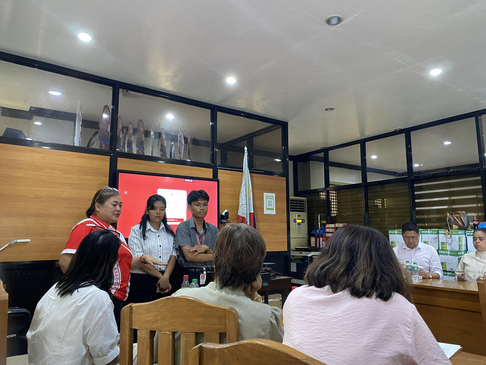
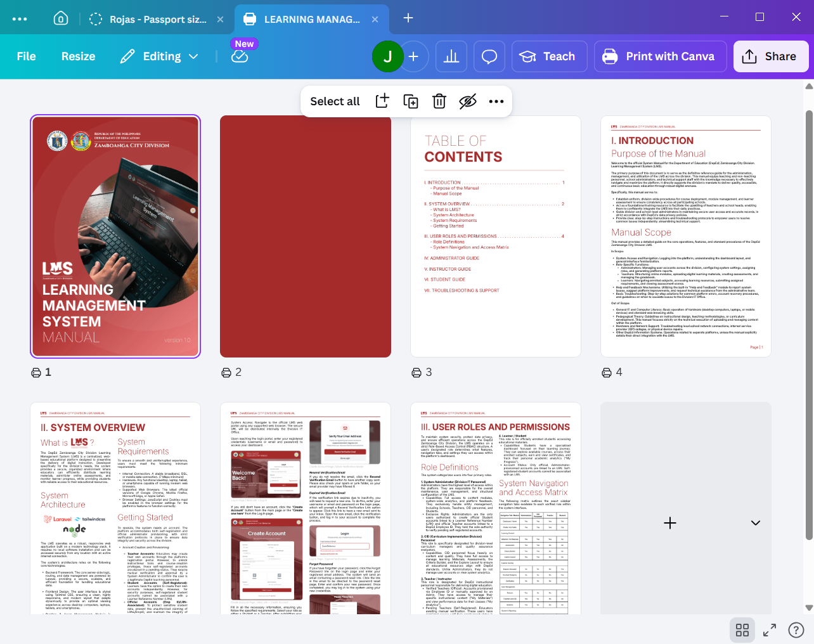

Formal System Evaluation & Presentation
JB
James Benedict
April 28, 2026
Week 10
Week 10 was undoubtedly the highlight of my internship. We held our formal system presentation at the Curriculum Implementation Division (CID) Conference Room, presenting our Learning Management System alongside fellow interns who showcased projects for Planning and Research, the Asset Management Unit (AMU), and the main DepEd website. Walking into the conference room, there was a palpable sense of anticipation. It was a proud moment for our team to finally demonstrate the culmination of weeks of hard work to the committee.

While we certainly felt natural nervousness before the committee, the actual demonstration flowed smoothly. We navigated the Q&A session with confidence, providing clear explanations for our design choices and technical implementation. It was rewarding to see the committee engage deeply with the system, asking insightful questions that validated the work we had put into security, authentication, and user accessibility. Passing this evaluation was a huge relief and a testament to the effort we poured into making the system stable.

With the system stability well-received by the board, we now have a clear roadmap for our final weeks. We are transitioning our focus entirely toward producing a comprehensive "turn-key" System Manual. This documentation is essential to ensure the long-term sustainability of the LMS, providing the division with a complete guide for future maintenance. We are eager to wrap up the documentation and provide the DepEd Zamboanga City Division with a robust, lasting digital asset.
